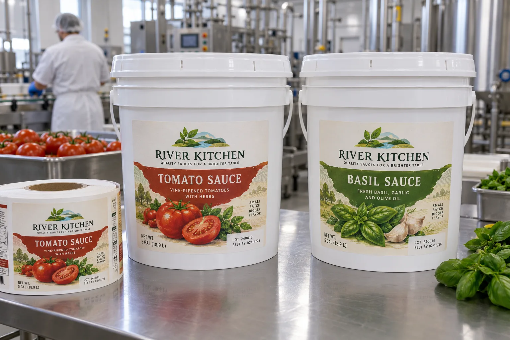

A large white bucket still has a small safe zone
A buyer may ask me for the biggest front label that fits a five-gallon pail. I would first turn the filled pail around. The wall tapers, ribs interrupt contact, and the handle can hide a large part of the print when it swings down. A broad rectangle on a flat drawing may wrinkle or lose its bottom edge on the molded container.
HERMA's custom-label request guide asks for the actual substrate, curvature, moisture, oils and application method before choosing a construction. UPM's film-label overview distinguishes flexible PE faces from more dimensionally stable PP options. Neither source makes a single film automatically correct for every rigid HDPE pail.
Think about the kitchen, not just the filling room
Imagine a composite sauce maker using the same white pail for tomato and basil variants. Color can help staff choose quickly, but the product name and lot field still need to survive wet hands, wiping and case movement. I would keep the variable field clear of the handle's usual resting position and print both varieties at actual size before approving the die.
A composite co-packer may buy pails from two suppliers. One has a smoother label panel; the other has an extra circumferential rib. I would not combine their volume into one label order until the same construction passes on both filled containers. A savings per thousand labels is quickly lost if the second pail needs manual smoothing.
Approve the complete construction
Apply the label using the intended wipe pressure and pail temperature. Check adhesion after the planned storage interval, then carry, stack and wipe down filled pails. If the sauce is hot filled, document when the exterior is actually labeled instead of assuming the filling temperature is the application temperature. A decorative sidewall label does not by itself establish a food-contact or tamper-evidence claim.
| Pack feature | What to measure |
|---|---|
| Wall | Usable smooth height and taper |
| Handle | Clearance when raised and lowered |
| Application | Surface dryness, temperature and wipe pressure |
| Product name, lot field and barcode visibility | |
| Use | Scuff and edge lift after carrying and wiping |
Our buying view
Leave white space for the container to work
I would choose a slightly smaller, repeatable label panel over a huge artwork area that fights the handle or the taper. On a working foodservice pail, legibility and repeatability are the premium features.
Send a useful pail RFQ
- Filled pails from every supplier and capacity.
- Wall dimensions, ribs, handle travel and lid style.
- Labeling sequence, temperature and exterior-cleaning process.
- SKU matrix, lot-code method and required quantity.
Read HDPE and PP container labels for substrate questions and sauce bottle label handling for a smaller, oil-prone package.
Frequently asked questions
Can one label size fit several pail capacities?
Only if the usable wall height, taper, ribs and handle clearance are checked on every finished pail.
Can labels be applied to a wet pail?
Do not assume a standard pressure-sensitive adhesive bonds through water or sauce residue. Record the actual surface condition at application.
Should the label cover the pail lid?
A sidewall product label and a lid or tamper feature are different decisions. Define each function before combining them.
Related buyer guides
Review your label specification
Send package photos, label dimensions, material details, quantity and application conditions. Include good and failed samples where possible so the discussion starts with evidence.